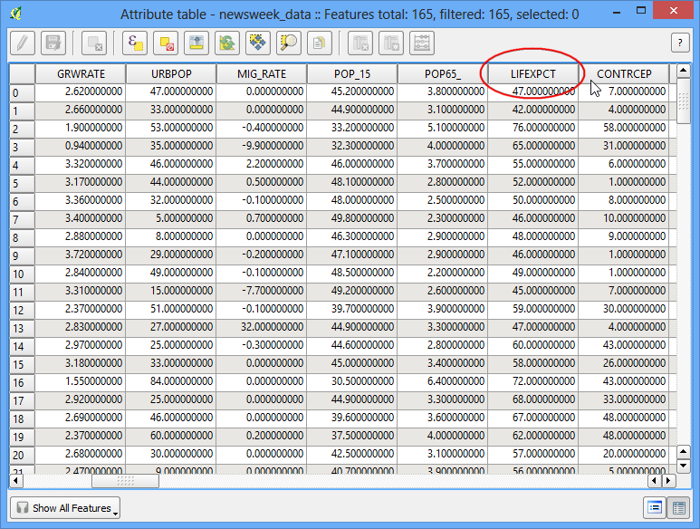
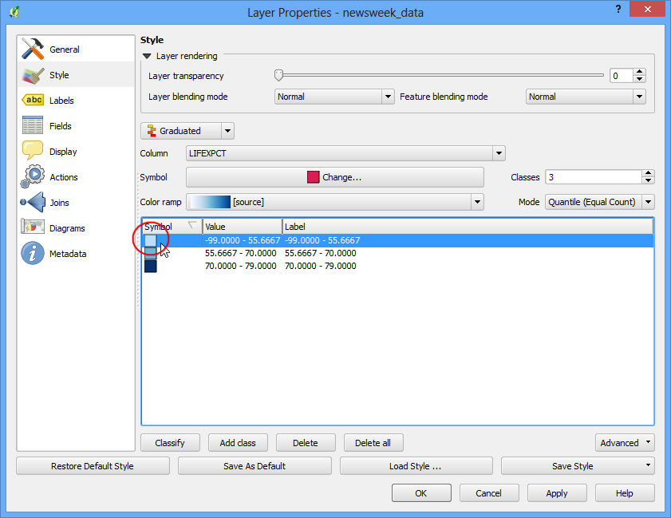

Βασική διανυσματική διαμόρφωση
[ Download PDF
A4
Letter ]
Για να σχεδιάσετε ένα χάρτη, πρέπει να διαμορφώσετε τα GIS δεδομένα και να τα παρουσιάσετε σε μια μορφή που είναι οπτικά κατατοπιστική. Υπάρχει ένας μεγάλος αριθμός διαθέσιμων επιλογών στο QGIS να εφαρμόσετε διαφορετικούς τύπους συμβόλων με τα βασικά δεδομένα. Σε αυτό το tutorial θα εξετάσουμε ορισμένα βασικά στοιχεία της διαμόρφωσης.
Επισκόπηση εργασίας
Θα διαμορφώσουμε ένα διανυσματικό επίπεδο για να δείξουμε το προσδόκιμο ζωής σε διαφορετικές χώρες του κόσμου.
Άλλες δεξιότητες που θα μάθετε
Διαδικασία
Ανοίξτε το QGIS και πηγαίνετε στο .

Περιηγηθείτε στον είδη κατεβασμένο φάκελο lifeexpectancy.zip και κάντε κλικ στο click Open. Επιλέξτε newsweek_data.shp και click Open. Στη συνέχεια θα σας ζητηθεί να επιλέξει το CRS. Επιλέξτε WGS84 EPSG:4326 από το Coordinate Reference System (CRS).

Το shapefile που περιέχεται μέσα στο zip αρχείο είναι φορτωμένο και μπορείτε να το δείτε στην αρχική μορφή που εφαρμόζεται σε αυτό.

Κάντε δεξί κλικ στο όνομα του επιπέδου και επιλέξτε Open Attribute Table.

Εξερευνήστε τα διαφορετικά χαρακτηριστικά. Για να διαμορφώσετε ένα επίπεδο, πρέπει να επιλέξετε ένα χαρακτηριστικό ή μια στήλη που θα αντιπροσωπεύουν το χάρτη που προσπαθούμε να δημιουργήσουμε. Επειδή θέλουμε να δημιουργήσουμε ένα επίπεδο που αντιπροσωπεύει το προσδόκιμο ζωής π.χ το μέσο όρος ηλικίας μέχρι ένα άτομο ζει σε μια χώρα, το πεδίο LIFEXPCT είναι το χαρακτηριστικό που θέλουμε αν χρησιμοποιήσουμε στη διαμόρφωση.

Κλείστε τον πίνακα χαρακτηριστικών. Κάντε δεξί κλικ στο επίπεδο ξανά και επιλέξτε Properties.

Οι διάφορες επιλογές διαμόρφωσης βρίσκονται στην καρτέλα Style στο παράθυρο διαλόγου Properties. Κάνοντας κλικ στο αναδυόμενο κουμπί στο παράθυρο διαλόγου Style, θα δείτε ότι υπάρχουν πέντε επιλογές Single Symbol, Categorized, Graduated, Rule Based and Point displacement. Θα εξερευνήσουμε τα πρώτα τρία σε αυτό το tutorial.

Επιλέξτε Single Symbol. Αυτή η επιλογή σας επιτρέπει να επιλέξετε μια απλή διαμόρφωση η οποία θα εφαρμοστεί σε όλες τις λειτουργίες του στρώματος. Επειδή αυτό είναι ένα σύνολο δεδομένων πολυγώνου, έχετε δύο βασικές επιλογές. Μπορείτε να fill το πολύγωνο, ή μπορείτε να διαμορφώσετε μόνο με outline. Μπορείτε να επιλέξετε το dotted μοτίβο γεμίσματος και πατήστε OK.

Θα δείτε μια νέα διαμόρφωση που εφαρμόζεται στο επίπεδο με το μοτίβο γεμίσματος που επιλέξατε.

Θα δείτε ότι αυτή η Single Symbol διαμόρφωση δεν είναι χρήσιμη στην επικοινωνία των δεδομένων του προσδόκιμου ζωής που προσπαθήσουμε να χαρτογραφήσουμε. Ας διερευνήσουμε μια άλλη επιλογή διαμόρφωσης. Κάντε δεξί κλικ στο επίπεδο ξανά και επιλέξτε Properties. Αυτήν τη φορά επιλέξτε Categorized από την καρτέλα Style. Categorized σημαίνει ότι τα χαρακτηριστικά στο επίπεδο θα εμφανίζονται σε διαφορετικές αποχρώσεις ενός χρώματος που βασίζεται σε μοναδικές τιμές στο χαρακτηριστικό πεδίου. Επιλέξτε την τιμή LIFEXPCT από το Column. Επιλέξτε μια color ramp της επιλογής σας και κάντε κλικ στο Classify στο κάτω μέρος. Κάντε κλικ στο OK.

Θα δείτε διαφορετικές χώρες να εμφανίζονται σε αποχρώσεις του μπλε. Πιο ανοιχτές αποχρώσεις σημαίνει χαμηλότερο προσδόκιμο ζωής. και οι σκουρόχρωμες περιοχές μεγαλύτερο προσδόκιμο ζωής. Αυτή η αναπαράσταση των δεδομένων είναι περισσότερο χρήσιμη και φαίνεται ξεκάθαρα το προσδόκιμο ζωής στις ανεπτυγμένες χώρες έναντι στις αναπτυσσόμενες χώρες. Αυτός θα είναι ο τύπος της διαμόρφωσης που θέσαμε για να δημιουργήσουμε.

Ας διερευνήσουμε τώρα τον τύπο συμβολισμού Graduated στο παράθυρο διαλόγου Style. Ο τύπος συμβολισμού Graduated σας επιτρέπει να διασπάσετε τα δεδομένα σε στήλες σε μοναδικές classes και να επιλέξετε μια διαφορετική διαμόρφωση για κάθε μια από τις κλάσεις. Μπορούμε να σκεφτούμε την ταξινόμηση τα δεδομένα του προσδόκιμου ζωής σε τρεις 3 κλάσεις. LOW, MEDIUM και HIGH. Επιλέξτε LIFEXPCT από Column και επιλέξτε 3 από τις κλάσεις. Θα δείτε ότι υπάρχουν πολλές Mode διαθέσιμες επιλογές. Ας δούμε τη λογική πίσω από αυτές τις λειτουργίες. Υπάρχουν 5 διαθέσιμες λειτουργίες. Equal Interval, Quantile, Natural Breaks (Jenks), Standard Deviation and Pretty Breaks. Αυτές οι λειτουργίες χρησιμοποιούν διαφορετικούς στατιστικούς αλγόριθμους για να διασπάσουν τα δεδομένα σε διαφορετικές κλάσεις.
Equal Interval: Όπως δηλώνει το όνομα, αυτή μέθοδος δημιουργεί κλάσεις οι οποίες έχουν το ίδιο μέγεθος. Εάν τα δεδομένα σας κυμαίνονται από 0-100 και θέλουμε 10 κλάσεις, αυτή η μέθοδος θα δημιουργήσει μια κλάση από 0-10, 10-20, 20-30 και ούτω καθ’εξής, συνεχίζοντας κάθε κλάση στο ίδιο μέγεθος των 10 μονάδων.
Quantile - Αυτή η μέθοδος αποφασίζει τις κλάσεις ώστε ο αριθμός των τιμών σε κάθε κλάση να είναι οι ίδιοι. Αν υπάρχουν 100 τιμές και θέλουμε 4 κλάσεις, η quantile μέθοδος θα αποφασίσει τις κατηγορίες έτσι ώστε κάθε κλάση θα έχει 25 τιμές.
Natural Breaks (Jenks) - Αυτός ο αλγόριθμος προσπαθεί να βρει φυσικές ομαδοποιήσεις των δεδομένων για να δημιουργήσει κλάσεις. Οι κλάσεις που προκύπτουν θα είναι τόσες ώστε να υπάρχει μέγιστη διακύμανση μεταξύ των επιμέρους κλάσεων και ελάχιστη διακύμανση με την κάθε κλάση ξεχωριστά.
Standard Deviation - Αυτή η μέθοδος θα υπολογίσει τη μέση τιμή των δεδομένων και δημιουργεί κλάσεις οι οποίες βασίζονται στην τυπική απόκλιση από τη μέση τιμή.
Pretty Breaks - Αυτό βασίζεται σε αλγόριθμο του στατιστικού πακέτου R. Είναι ένα σύνθετο κομμάτι, αλλά η pretty στο όνομα σημαίνει ότι δημιουργεί όρια των κλάσεων όπου είναι στρογγυλοποιημένοι αριθμοί.
Για να κρατήσουμε απλά τα πράγματα, ας χρησιμοποιήσουμε τη μέθοδο Quantile. Κάντε κλικ Classify στο κάτω μέρος και θα δείτε 3 κλάσεις να εμφανίζονται με τις αντίστοιχες τιμές τους. Κάντε κλικ στο OK.
Note
Για ένα χαρακτηριστικό που χρησιμοποιείτε στη διαμόρφωση Graduated, πρέπει να υπάρχει αριθμητικό πεδίο. Οι ακέραιες και οι πραγματικές τιμές είναι ικανοποιητικές, αλλά εάν το πεδίο χαρακτηριστικού είναι αλφαριθμητικό, δε μπορεί να χρησιμοποιηθεί με αυτήν την επιλογή διαμόρφωσης.

Θα δείτε ένα χάρτη που δείχνει τις χώρες σε 3 χρώματα αντιπροσωπεύοντας το μέσο όρο του προσδόκιμου ζωής της χώρας.

Τώρα πηγαίνετε πίσω στο Style παράθυρο διαλόγου κάνοντας δεξί κλικ στο επίπεδο και επιλέγοντας Properties. Υπάρχουν μερικές επιλογές διαμόρφωσης διαθέσιμες. Μπορείτε να κάνετε κλικ στο Sympol για κάθε μια από τις κλάσεις και επιλέξτε διαφορετική διαμόρφωση. Θα επιλέξουμε κόκκινο, κίτρινο και πράσινο χρώμα γεμίσματος για να δείξει χαμηλό, μέτριο. και μεγάλο προσδόκιμο ζωής.

Στο παράθυρο διαλόγου Symbol Selector. Κάντε κλικ στον επιλογέα Color

Κάντε κλικ σε ένα χρώμα από το παράθυρο διαλόγου Select Color.

Επιστροφή στο παράθυρο διαλόγου Layer Properties, μπορείτε να κάνετε διπλό-κλικ στη στήλη Label δίπλα από κάθε τιμή και πληκτρολογείστε το κείμενο που επιθυμείτε να εμφανίσετε. Παρόμοια, μπορείτε να κάνετε διπλό-κλικ στη στήλη Value για να επεξεργαστείτε τις επιλεγμένες διακυμάνσεις. Κάντε κλικ στο OK μόλις ικανοποιηθείτε από τις κλάσεις.

Αυτή η διαμόρφωση αποπνέει έναν πολύ πιο χρήσιμο χάρτη από τις δύο προηγούμενες απόπειρες. Υπάρχουν σαφέστατα αξιοσημείωτα ονόματα και χρώματα κλάσεων για να αντιπροσωπεύουν τη δική μας ερμηνεία στις τιμές του προσδόκιμου ζωής.